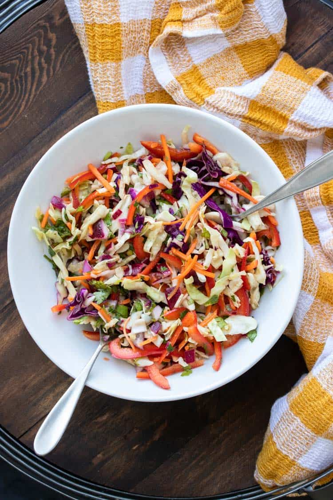

Restaurant Slaw
Indulge in the delightful flavors of our Sweet Coleslaw recipe -
reminiscent of the coleslaw served at renowned fried chicken or fish
restaurants. This delectable slaw perfectly complements burgers and
adds a tantalizing touch to BBQ pork sandwiches. Savor the sweetness
and relish the versatility of this delectable treat! 🥗🍔🍖

Details
- Prep Time: 15 mins
- Additional Time: 2 hrs
- Total Time: 2hrs 15mins
- Servings: 8
Ingredients
- 1 (16 ounce) bag coleslaw mix
- 2 tablespoons diced onion
- ⅔ cup creamy salad dressing (such as Miracle Whip™)
- ½ cup white sugar
- 3 tablespoons vegetable oil
- 1 tablespoon white vinegar
- ½ teaspoon poppy seeds
- ¼ teaspoon salt
Directions
- In a large bowl, combine the coleslaw mix and onion, ensuring
they are evenly mixed.
- In a medium bowl, whisk together the salad dressing, sugar,
vegetable oil, vinegar, poppy seeds, and salt until all the
ingredients are well blended.
- Pour the prepared dressing over the coleslaw mixture in the
large bowl. Toss the mixture thoroughly, ensuring all the
ingredients are evenly coated with the dressing.
- Cover the bowl and refrigerate the coleslaw for at least 2 hours
before serving. This chilling period allows the flavors to meld
together, resulting in a more delightful and harmonious taste.
- Once chilled, serve the Sweet Coleslaw and delight in its
refreshing and delectable flavors.
Back to home